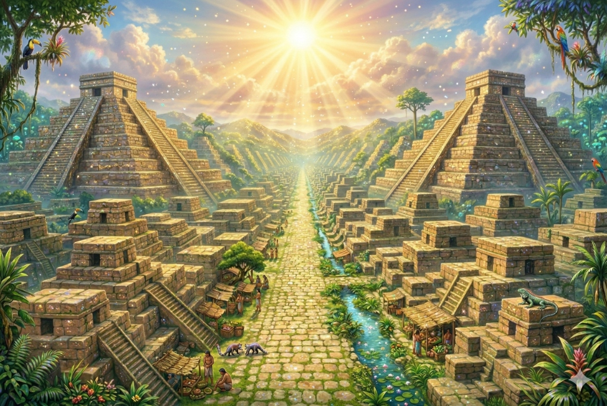

覚醒のシナリオ
📅 2026.03.02
本来の能力をどう取り戻すのか？ — 失われた文明と覚醒のシナリオ
ムー大陸・アトランティスの叡智、ピラミッドの真実、日本の隠された歴史。歴史と精神の観点から、人類の覚醒のシナリオを紐解きます。
続きを読む →
数千年の時を経て、なお輝き続ける人類の偉大な遺産。
ピラミッドの奥深くに眠る秘密、楔形文字に刻まれた物語、星の動きを読み解いた天文学——古の叡智が、今ここに蘇ります。
失われた文明の痕跡は、私たちに数多くの驚きと発見をもたらします。三つの視点から、古代の世界を紐解いていきましょう。
メソポタミアの肥沃な三日月地帯から始まった都市文明。農耕の発展、文字の誕生、法の成立——人類文明の夜明けを辿ります。
ピラミッドの精密な石組み、マヤの天文台。現代でも再現困難な建築技術の秘密に迫り、古代の叡智の深さを探ります。
マヤ暦の驚異的な精度、エジプトのシリウス周期。古代人が星空から読み解いた宇宙の法則を現代科学の視点で解説します。
ムー大陸・アトランティスの叡智、ピラミッドの真実、日本の隠された歴史。歴史と精神の観点から、人類の覚醒のシナリオを紐解きます。
続きを読む → エジプト文明
エジプト文明
ギザの大ピラミッドは、4500年以上の時を経てなお世界を魅了し続けています。230万個の石灰岩ブロックで築かれたこの巨大建造物に秘められた驚異の技術とは。
続きを読む → メソポタミア文明
メソポタミア文明
チグリス・ユーフラテス川の流域に花開いた世界最古の都市文明。シュメール人が生み出した楔形文字は、人類初の記録システムとして歴史を変えました。
続きを読む → マヤ文明
マヤ文明
中米の密林に栄えたマヤ文明。望遠鏡もコンピュータも持たない彼らが、なぜ現代科学に匹敵する天文学的精度を実現できたのでしょうか。
続きを読む →